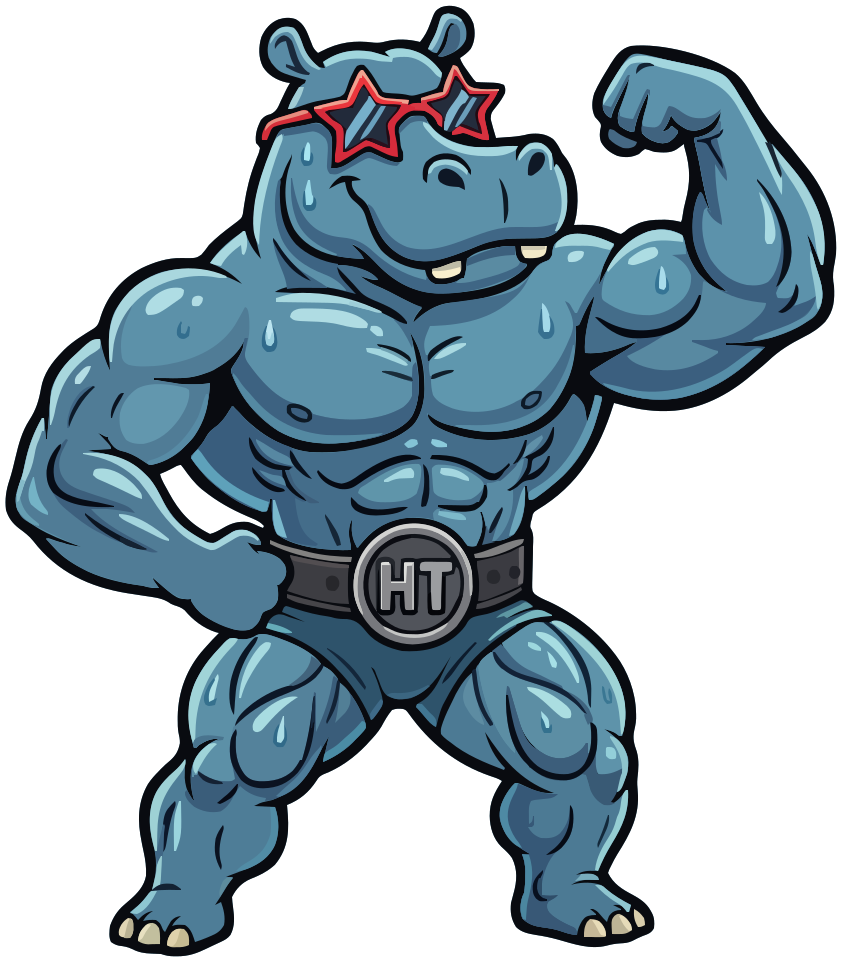

Stay in control of your gains and your data.
-
Deine Daten bleiben auf deinem Gerät Kein Konto, keine Anmeldung, kein Netzzugriff. Was du einträgst, verlässt das iPhone nur, wenn du selbst ein Backup exportierst.Your data stays on your device No account, no sign-in, no network access. What you enter leaves the iPhone only when you export a backup yourself.
-
Kostenlos und ohne Werbung Kein Abo, keine Käufe in der App, keine Werbung.Free and without ads No subscription, no in-app purchases, no ads.
-
Open Source zur Veröffentlichung Mit dem Erscheinen im App Store wird der Quellcode offengelegt.Open source at release When the app comes out on the App Store, its source code will be published.
And because a hippo never skips leg day.

Keine Funktion passt zu dieser Suche.No feature matches this search.
Startseite und HistorieHome screen and history
Was nach dem Öffnen der App zu sehen ist: alle Workouts, die laufende Woche und ein Jahr Training auf einen Blick.What you see after opening the app: all workouts, the current week and a year of training at a glance.
Startseite mit WochenzählerHome screen with weekly counter1 Bild1 image
Die Startseite listet alle Workouts, das neueste oben, jeweils mit Name, Datum und der Zahl der Übungen und Sätze. Rechts neben dem Titel zählt „This Week“ Workouts und Sätze der laufenden Woche. Ein Satz zählt erst, wenn etwas darin eingetragen ist. Leere Sätze zählen nirgends, weder hier noch im Aktivitätsgraphen oder im Bericht.
The home screen lists all workouts, newest first, each with its name, date and the number of exercises and sets. To the right of the title, “This Week” counts the workouts and sets of the current week. A set only counts once something is entered in it. Empty sets count nowhere: not here, not in the activity graph, not in the report.
AktivitätsgraphActivity graph3 Bilder3 images
Unter dem Titel zeigt ein Raster die letzten zwölf Monate. Jede Spalte ist eine Woche, jede Zeile ein Wochentag, heute ist umrandet. Je mehr Sätze an einem Tag, desto kräftiger das Grün.
In den Einstellungen unter „Overview“ lassen sich der Graph, die Beschriftung der Wochentage und eine Legende ein- und ausschalten.
Below the title, a grid shows the last twelve months. Each column is a week, each row a weekday, and today is outlined. The more sets on a day, the stronger the green.
In Settings under “Overview” you can turn the graph, the weekday labels and a legend on and off.
Historie nach Zeitraum filternFilter the history by period3 Bilder3 images
Rechts neben der Überschrift „History“ sitzt ein Menü für den Zeitraum. Mit einem Filter gruppiert die Liste die Workouts unter Zwischenüberschriften, etwa nach Monaten. Die Wahl bleibt auch nach einem Neustart der App erhalten. Liegt im Zeitraum kein Workout, bietet die Liste „Show All“ an.
So geht’s
- Auf „All“ neben „History“ tippen.
- Einen Zeitraum wählen oder „Custom Range…“ für ein eigenes Von und Bis.
Next to the “History” heading sits a menu for the period. With a filter on, the list groups the workouts under subheadings, for example by month. The choice survives a restart of the app. If there is no workout in the period, the list offers “Show All”.
How to
- Tap “All” next to “History”.
- Pick a period, or “Custom Range…” for your own start and end.
Workout wiederholenRepeat a workout2 Bilder2 images
Langes Drücken auf ein Workout in der Liste bietet „Copy Workout“ an. Die Kopie trägt das heutige Datum, hat dieselben Übungen und Sätze und öffnet sich sofort im Editor. Wer sie unverändert abbricht, legt nichts an.
So geht’s
- Lange auf ein Workout in der Liste drücken.
- „Copy Workout“ tippen.
- Werte anpassen und „Save“.
Long-pressing a workout in the list offers “Copy Workout”. The copy carries today’s date, has the same exercises and sets and opens right away in the editor. Cancelling it unchanged creates nothing.
How to
- Long-press a workout in the list.
- Tap “Copy Workout”.
- Adjust the values and tap “Save”.
Workout löschenDelete a workout1 Bild1 image
Über ein Workout in der Liste nach links wischen und „Delete“ tippen.
Swipe left across a workout in the list and tap “Delete”.
Workout-DetailseiteWorkout detail page4 Bilder4 images
Ein Tipp auf ein Workout öffnet seine Detailseite: Datum, Zahl der Übungen und Sätze, jede Übung mit ihren Sätzen, Gewicht, Wiederholungen und Anstrengung, dazu die Notizen zu einzelnen Übungen und zum ganzen Workout. Links und rechts getrennt geloggte Sätze stehen in eigenen Blöcken, ein Supersatz als ein gemeinsamer Block.
Oben rechts führt „Edit“ in den Editor, der Knopf daneben zum PDF-Bericht.
Tapping a workout opens its detail page: date, number of exercises and sets, each exercise with its sets, weight, reps and effort, plus the notes on single exercises and on the whole workout. Sets logged separately for left and right appear in their own blocks, a superset as one shared block.
At the top right, “Edit” leads to the editor, the button next to it to the PDF report.
Muskelgruppen und HeatmapMuscle groups and heat map
Wohin das Training geht: welche Muskelgruppen wie viel abbekommen und was dabei zu kurz kommt.Where the training goes: how much each muscle group gets, and what falls short.
Muskel-HeatmapMuscle heat map3 Bilder3 images
Das Figur-Symbol neben dem Zahnrad öffnet „Muscle Groups“. Oben steht die Figur von vorne und von hinten. Jede Muskelgruppe ist nach ihren Sätzen im gewählten Zeitraum eingefärbt: stufenlos von Grün für wenig über Gelb, Orange und Rot bis Lila für die meisttrainierte Gruppe. Grau heißt: in diesem Zeitraum nicht trainiert.
Die Farben sind relativ zur Muskelgruppe mit den meisten Sätzen, so wie der Aktivitätsgraph jeden Tag am trainingsreichsten misst. Ein Satz zählt dabei voll für jede Muskelgruppe seiner Übung: ein Satz Kreuzheben für Back, Hamstrings und Glutes.
Der Regler darüber rastet auf All, 1Y, 6M, 3M und 1M ein. Ganz links zählt alles seit dem ersten Workout. Die Wahl bleibt erhalten. Ein Tipp auf einen Muskel öffnet seine Historie.
In den Einstellungen wählt „Gender“ unter „Muscle Heat Map“ zwischen männlicher und weiblicher Figur. Sonst hängt nichts daran.
So geht’s
- Auf das Figur-Symbol neben dem Zahnrad tippen.
- Mit dem Regler den Zeitraum wählen.
- Auf einen Muskel tippen, um seine Historie zu sehen.
The figure icon next to the gear opens “Muscle Groups”. At the top is the figure from the front and from the back. Each muscle group is colored by its sets in the selected period: seamlessly from green for few through yellow, orange and red to purple for the most-trained group. Gray means not trained in this period.
The colors are relative to the muscle group with the most sets, the way the activity graph measures each day against the busiest one. A set counts in full for every muscle group of its exercise: one set of deadlifts for Back, Hamstrings and Glutes.
The slider above snaps to All, 1Y, 6M, 3M and 1M. All the way left counts everything since the first workout. The choice is kept. Tapping a muscle opens its history.
In Settings, “Gender” under “Muscle Heat Map” switches between a male and a female figure. Nothing else depends on it.
How to
- Tap the figure icon next to the gear.
- Choose the period with the slider.
- Tap a muscle to see its history.
Sätze je MuskelgruppeSets per muscle group1 Bild1 image
Unter der Heatmap stehen alle Muskelgruppen mit ihren Sätzen im gewählten Zeitraum und dem Tag, an dem sie zuletzt trainiert wurden. Der farbige Punkt ist die Farbe der Muskelgruppe auf der Figur.
Übungen ohne Muskelgruppe zählen nirgends. Gibt es solche in der Historie, nennt die Seite sie mit einem gelben Warnzeichen und führt zur Übungsliste, gefiltert auf „Undefined“.
Below the heat map, every muscle group is listed with its sets in the selected period and the day it was last trained. The colored dot is the muscle group’s color on the figure.
Exercises without a muscle group count nowhere. If the history has any, the page names them with a yellow warning sign and leads to the exercise list, filtered to “Undefined”.
Historie einer MuskelgruppeHistory of a muscle group1 Bild1 image
Ein Tipp auf eine Muskelgruppe, in der Liste oder auf der Figur, öffnet ihre Historie. Oben zeigt ein Balkendiagramm die Sätze der letzten zwölf Wochen. Darunter steht jedes Workout, das sie trainiert hat, das neueste oben. Jede Übung steht dort in einer Zeile, etwa „2×8 @ 70 kg“, dazu die anderen Muskelgruppen der Übung.
Ein Tipp auf eine Übung öffnet deren eigene Historie mit allen Sätzen.
Tapping a muscle group, in the list or on the figure, opens its history. At the top, a bar chart shows the sets of the last twelve weeks. Below it is every workout that trained the group, newest first. Each exercise gets one line there, such as “2×8 @ 70 kg”, along with the exercise’s other muscle groups.
Tapping an exercise opens its own history with all its sets.
Workout erfassenLogging a workout
Der Editor, in dem ein Training entsteht: Übungen, Sätze, Bewertung und Notizen.The editor where a session takes shape: exercises, sets, ratings and notes.
Workout startenStart a workout2 Bilder2 images
„Start Workout“ oben rechts öffnet den Editor im Vollbild. Der Name ist optional, ohne Namen steht in der Liste das Datum. Das Datum steht auf jetzt und lässt sich über die Datumszeile ändern, etwa um ein Training nachzutragen. „Save“ speichert, „Cancel“ verwirft.
“Start Workout” at the top right opens the editor full screen. The name is optional; without one, the list shows the date. The date is set to now and can be changed in the date row, for example to log a past session. “Save” saves, “Cancel” discards.
Übung hinzufügenAdd an exercise4 Bilder4 images
„Add Exercise“ öffnet die Auswahl. Oben stehen die Standard-Übungen mit Gewicht und Wiederholungen, darunter die mit eigenen Feldern. Das Suchfeld unten und der Muskelgruppen-Filter oben rechts grenzen die Liste ein.
Ein Name, den es noch nicht gibt, lässt sich unter „New“ direkt anlegen. Er landet als Standard-Übung in der Übungsliste und kann dort später ausgebaut werden.
“Add Exercise” opens the picker. The standard exercises with weight and reps come first, those with custom fields below. The search field at the bottom and the muscle group filter at the top right narrow the list.
A name that doesn’t exist yet can be created right there under “New”. It goes into the exercise list as a standard exercise and can be extended there later.
Sätze erfassenLog sets1 Bild1 image
„Add Set“ legt einen Satz an. In der Satzzeile kopiert das Doppel-Symbol den Satz mit denselben Werten, das Minus löscht nur diesen Satz, und am Griff rechts lässt sich die Reihenfolge ziehen.
Mit „Start with One Set“ in den Einstellungen bringt jede neu hinzugefügte Übung gleich einen ersten Satz mit.
“Add Set” adds a set. In the set row, the double icon copies the set with the same values, the minus deletes just this set, and the handle on the right drags it to a new position.
With “Start with One Set” in Settings, every newly added exercise comes with a first set.
Letzte LeistungLast performance2 Bilder2 images
Eine aufgeklappte Übung zeigt unter ihrem Namen, wann und was zuletzt geloggt wurde, zum Beispiel „5 days ago: 1×8 @ 50 kg …“. Ein Tipp darauf oder auf das Uhr-Symbol öffnet die ganze Historie der Übung, ohne den Editor zu verlassen.
Wer den Platz lieber hat, schaltet „Show Last Performance“ in den Einstellungen aus.
An expanded exercise shows under its name when and what was last logged, for example “5 days ago: 1×8 @ 50 kg …”. Tapping it or the clock icon opens the exercise’s full history without leaving the editor.
If you’d rather have the space, turn off “Show Last Performance” in Settings.
Anstrengung bewertenRate effort2 Bilder2 images
Die Balken am Ende einer Satzzeile zeigen, wie schwer der Satz war: ein Balken für leicht, zwei für normal, drei für schwer. Ein neuer Satz beginnt unbewertet mit grauen Balken. Ein Tipp öffnet die Auswahl, „Clear“ nimmt die Bewertung zurück.
Die Bewertung erscheint auch auf der Detailseite, in der Historie und im PDF-Bericht.
The bars at the end of a set row show how hard the set was: one bar for easy, two for normal, three for hard. A new set starts unrated with gray bars. A tap opens the choice, “Clear” removes the rating.
The rating also appears on the detail page, in the history and in the PDF report.
Reps in Reserve (RIR)Reps in Reserve (RIR)4 Bilder4 images
„Rate Effort“ in den Einstellungen bestimmt, wie neue Übungen bewerten: „Easy, Normal, Hard“, „Reps in Reserve (RIR)“ oder „Off“. Ohne eigene Wahl ist es „Easy, Normal, Hard“. Bereits geloggte Übungen behalten ihre Skala.
Für eine einzelne Übung im Workout wechselt langes Drücken auf die Kopfzeile und dann „Rate Effort“ die Skala. Sind schon Sätze bewertet, fragt die App vorher, denn die alten Bewertungen passen nicht zur neuen Skala.
RIR reicht von 0 (Muskelversagen) bis 10 in halben Schritten. Die Schnellwahl bietet 0, 0,5, 1, 2, 3 und 4+, feiner geht es mit dem Stepper.
“Rate Effort” in Settings sets how new exercises are rated: “Easy, Normal, Hard”, “Reps in Reserve (RIR)” or “Off”. Unless you choose otherwise, it is “Easy, Normal, Hard”. Exercises already logged keep their scale.
For a single exercise in a workout, long-press its header and pick “Rate Effort” to switch the scale. If sets are already rated, the app asks first, because the old ratings don’t fit the new scale.
RIR goes from 0 (failure) to 10 in half steps. The quick picks offer 0, 0.5, 1, 2, 3 and 4+; the stepper goes finer.
NotizenNotes2 Bilder2 images
Das Notiz-Symbol in der Kopfzeile einer Übung öffnet eine Notiz für diese Übung in diesem Workout. Ist das Symbol gefüllt, steht schon etwas darin. Unten im Editor steht das Notizfeld für das ganze Workout, es wächst mit dem Text.
Eine Notiz allein genügt, damit das Workout in der Historie der Übung auftaucht.
The note icon in an exercise’s header opens a note for this exercise in this workout. A filled icon means there is already something in it. At the bottom of the editor is the note field for the whole workout; it grows with the text.
A note alone is enough for the workout to show up in the exercise’s history.
Einklappen und umsortierenCollapse and reorder2 Bilder2 images
Ein Tipp auf den Namen einer Übung klappt sie ein oder aus. Mit „Collapse Other Exercises“ in den Einstellungen bleibt immer nur die gerade bearbeitete offen.
„Reorder“ unter den Übungen öffnet eine Liste, in der sich die Reihenfolge der Übungen ziehen lässt.
Tapping an exercise’s name collapses or expands it. With “Collapse Other Exercises” in Settings, only the one you are editing stays open.
“Reorder” below the exercises opens a list where you can drag the exercises into a new order.
Übung aus dem Workout entfernenRemove an exercise from the workout1 Bild1 image
Langes Drücken auf die Kopfzeile einer Übung öffnet ihr Menü. „Delete Exercise“ entfernt sie samt Sätzen, „Rate Effort“ wechselt die Bewertungsskala, und „Convert to Superset…“ erscheint, sobald eine zweite Übung im Workout ist.
Ein einfacher Tipp klappt nur ein und aus. So geht keine Übung aus Versehen verloren.
Long-pressing an exercise’s header opens its menu. “Delete Exercise” removes it along with its sets, “Rate Effort” switches the rating scale, and “Convert to Superset…” appears as soon as there is a second exercise in the workout.
A plain tap only collapses and expands. That way no exercise gets lost by accident.
Änderungen verwerfenDiscard changes1 Bild1 image
„Cancel“ schließt den Editor. Hat sich etwas geändert, fragt die App, ob die Änderungen verworfen werden sollen. Ohne Änderungen schließt er sofort.
“Cancel” closes the editor. If anything changed, the app asks whether to discard the changes. Without changes, it closes right away.
Einseitiges TrainingOne-sided training3 Bilder3 images
Bei Übungen, die es anbieten, sitzt neben dem Namen ein kleines Abzeichen mit dem Modus. Ein Tipp darauf wechselt zwischen drei Modi:
- „Normal“: beidseitig.
- „One-Sided, Same Weight“ (Abzeichen „1-sided“): eine Satzliste, das Gewicht gilt pro Seite.
- „One-Sided, Log L/R“ (Abzeichen „L/R“): ein Umschalter Left/Right, beide Seiten mit eigenen Sätzen.
Beim Wechsel geht nichts verloren. Wer L/R verlässt, wird gefragt, weil links und rechts dann zu einer Liste zusammenfallen. Eine Übung kommt mit dem Modus ins Workout, mit dem sie zuletzt geloggt wurde.
Exercises that offer it have a small badge with the mode next to their name. Tapping it switches between three modes:
- “Normal”: both sides.
- “One-Sided, Same Weight” (badge “1-sided”): one list of sets, the weight is per side.
- “One-Sided, Log L/R” (badge “L/R”): a Left/Right switch, each side with its own sets.
Switching loses nothing. Leaving L/R asks first, because left and right then merge into one list. An exercise enters a workout in the mode it was last logged with.
Seiten vergleichenCompare sides2 Bilder2 images
Enthält die Historie einer Übung beidseitige und einseitige Einträge, erscheint oben links der Knopf „Per Side“. Eingeschaltet steht bei den beidseitigen Sätzen das Gewicht pro Seite in Klammern, etwa „9,5 kg (4,75/side)“. So lassen sich die Zahlen direkt vergleichen.
If an exercise’s history has both two-sided and one-sided entries, a “Per Side” button appears at the top left. Turned on, the two-sided sets show the weight per side in parentheses, such as “9.5 kg (4.75/side)”. That makes the numbers directly comparable.
SupersätzeSupersets4 Bilder4 images
Ein Supersatz verbindet zwei Übungen, die abwechselnd trainiert werden. „Add Exercise“ und dann „Superset“ wählt beide nacheinander, die erste wird A, die zweite B. In der Karte stehen die Sätze in der Reihenfolge, in der sie gemacht wurden, die von B farbig hinterlegt. „Add A“ und „Add B“ loggen den nächsten Satz, Ziehen verschiebt einen.
Zwei getrennt geloggte Übungen lassen sich nachträglich verbinden: langes Drücken auf eine davon und „Convert to Superset…“. Detailseite und PDF-Bericht zeigen das Paar als einen Block. Jede der beiden behält ihren Modus und ihre Historie; Links/Rechts-Logging gibt es im Supersatz nicht.
A superset links two exercises that are trained in alternation. “Add Exercise” and then “Superset” picks both in turn; the first becomes A, the second B. The card lists the sets in the order they were done, B’s on a colored background. “Add A” and “Add B” log the next set, dragging moves one.
Two exercises logged separately can be linked afterwards: long-press one of them and pick “Convert to Superset…”. The detail page and the PDF report show the pair as one block. Each of the two keeps its mode and its history; left/right logging isn’t available in a superset.
Übungen mit eigenen Feldern erfassenLog exercises with custom fields2 Bilder2 images
Übungen mit eigenen Feldern zeigen im Editor genau ihre Felder, bis zu sechs, drei pro Zeile. Ohne „Track Sets“ gibt es keine Sätze, die Felder werden einmal pro Workout ausgefüllt, wie hier beim Rudern. Eine Dauer wird über Räder für Stunden, Minuten und Sekunden eingestellt.
Exercises with custom fields show exactly their fields in the editor, up to six, three per row. Without “Track Sets” there are no sets; the fields are filled in once per workout, as with rowing here. A duration is set with wheels for hours, minutes and seconds.
ÜbungshistorieExercise history2 Bilder2 images
Das Uhr-Symbol an einer Übung öffnet ihre Historie: jedes Workout, in dem sie vorkam, mit Datum, Workout-Name, Sätzen und Anstrengung. Das Symbol sitzt im Editor, auf der Detailseite und an jeder Zeile der Übungsliste.
The clock icon on an exercise opens its history: every workout it appeared in, with date, workout name, sets and effort. The icon is in the editor, on the detail page and on every row of the exercise list.
PDF-BerichtPDF report
Ein Workout als Datei, die sich weitergeben oder drucken lässt.A workout as a file you can pass on or print.
PDF-BerichtPDF report5 Bilder5 images
Der Teilen-Knopf oben rechts auf der Detailseite öffnet „Share Workout“. Dort steht, wie viele Übungen und Sätze in den Bericht kommen und welche nicht: Übungen ohne Gewicht und Wiederholungen fehlen vorerst, der Bericht nennt sie auf seiner letzten Seite. Die Gewichtseinheit lässt sich nur für diesen Bericht umstellen.
„Export PDF“ erzeugt die Datei und öffnet das Teilen-Menü von iOS. Der Bericht zeigt Volumen pro Übung und gesamt, die verwendete Anstrengungsskala, Notizen, links und rechts nebeneinander und Supersätze als Block mit A1, B1, A2 … Längere Workouts laufen auf weitere Seiten.
So geht’s
- Workout öffnen.
- Teilen-Knopf oben rechts.
- „Export PDF“ und im Teilen-Menü das Ziel wählen.
The share button at the top right of the detail page opens “Share Workout”. It says how many exercises and sets go into the report and which don’t: exercises without weight and reps are left out for now, and the report lists them on its last page. The weight unit can be changed for this report alone.
“Export PDF” creates the file and opens the iOS share sheet. The report shows volume per exercise and in total, the effort scale used, notes, left and right side by side, and supersets as a block with A1, B1, A2 … Longer workouts run onto further pages.
How to
- Open a workout.
- Tap the share button at the top right.
- Tap “Export PDF” and choose the destination in the share sheet.
ÜbungslisteExercise list
Settings → Exercises: alle Übungen, die im Workout zur Auswahl stehen, und was sie loggen.Settings → Exercises: every exercise you can pick in a workout, and what it logs.
Die eigene ÜbungslisteYour exercise list3 Bilder3 images
Die Übungsliste enthält alles, was beim Hinzufügen zur Auswahl steht. Oben die Standard-Übungen in einem Abschnitt, der sich einklappen lässt, darunter die mit eigenen Feldern. Unter jedem Namen stehen die Muskelgruppen, bei Custom-Übungen auch, was sie loggen, dazu ein farbiges Abzeichen für die Kategorie.
Das Uhr-Symbol an jeder Zeile öffnet die Historie der Übung. Ist es grau, wurde die Übung noch nie geloggt.
The exercise list holds everything you can pick when adding an exercise. On top, the standard exercises in a collapsible section; below them, those with custom fields. Under each name are its muscle groups, for custom exercises also what they log, plus a colored badge for the category.
The clock icon on each row opens the exercise’s history. If it is gray, the exercise has never been logged.
Übungen anlegenCreate exercises2 Bilder2 images
Eine Standard-Übung entsteht mit einem Namen unter „Add Standard Exercise“. Muskelgruppen und Kategorie lassen sich danach setzen. „New Exercise with Fields…“ öffnet den vollen Editor für alles, was etwas anderes loggt: Cardio mit Zeit und Distanz oder eine Kraftübung mit einem zusätzlichen Wert.
Auch beim Hinzufügen im Workout lässt sich ein neuer Name direkt anlegen.
A standard exercise is created from a name under “Add Standard Exercise”. Muscle groups and category can be set afterwards. “New Exercise with Fields…” opens the full editor for anything that logs something else: cardio with time and distance, or a strength exercise with an extra value.
A new name can also be created right away while adding an exercise in a workout.
Übung bearbeitenEdit an exercise3 Bilder3 images
Ein Tipp auf eine Übung öffnet ihren Editor. Oben rechts sagt ein Abzeichen, ob sie „Standard“ oder „Custom“ ist. Bei einer Standard-Übung bleibt der Editor kompakt: Name und Muskelgruppen, darunter steht, wann eine Übung als Custom gilt (andere Kategorie, eigenes Feld, Weight oder Reps aus, Track Sets oder One-Sided Training aus).
„Add Custom Fields…“ klappt den Rest auf: Kategorie, „Track Sets“, „One-Sided Training“, die Standardfelder und eigene Felder. Eine Umbenennung folgt der Übung durch die ganze Historie.
Tapping an exercise opens its editor. A badge at the top right says whether it is “Standard” or “Custom”. For a standard exercise the editor stays compact: name and muscle groups, and below them a note on when an exercise counts as custom (another category, a custom field, Weight or Reps off, Track Sets or One-Sided Training off).
“Add Custom Fields…” expands the rest: category, “Track Sets”, “One-Sided Training”, the standard fields and custom fields. A rename follows the exercise through its entire history.
Eigene FelderCustom fields3 Bilder3 images
Unter „Own Fields“ fügt „Add Field“ ein Feld hinzu, mit Titel und Typ (Text, Number oder Duration). Zusammen mit Weight und Reps sind sechs Felder möglich.
Ist die Übung schon geloggt, steht direkt am Feld, was mit den bisherigen Workouts passiert, etwa „Added empty to 3 logged workouts“. Beim Speichern fasst „Apply Changes?“ das noch einmal zusammen. „Convert to Standard Exercise“ macht aus einer Custom-Übung wieder eine reine Gewicht-und-Wiederholungen-Übung.
Under “Own Fields”, “Add Field” adds a field with a title and a type (Text, Number or Duration). Together with Weight and Reps, six fields are possible.
If the exercise has already been logged, the field says right there what happens to past workouts, for example “Added empty to 3 logged workouts”. On saving, “Apply Changes?” sums it up once more. “Convert to Standard Exercise” turns a custom exercise back into a plain weight-and-reps exercise.
Einmal pro Workout statt in SätzenOnce per workout instead of in sets2 Bilder2 images
Mit ausgeschaltetem „Track Sets“ loggt eine Übung ihre Felder einmal pro Workout, etwa eine Rudereinheit mit Dauer, Distanz, Watt und Gefühl.
Wer „Track Sets“ bei einer schon geloggten Übung ausschaltet, verliert nichts: Jeder Satz wird im Workout zu einem eigenen Eintrag.
With “Track Sets” off, an exercise logs its fields once per workout, for example a rowing session with duration, distance, watts and feel.
Turning off “Track Sets” for an exercise that is already logged loses nothing: each set becomes its own entry in the workout.
KategorienCategories1 Bild1 image
Jede Übung kann einer Kategorie angehören: Strength, Cardio, Mobility oder einer eigenen, die über „New Category…“ direkt im Editor entsteht. Die Kategorie erscheint als farbiges Abzeichen in der Liste. Ob eine Übung einseitiges Training anbietet, richtet sich zunächst nach ihr und lässt sich pro Übung ändern.
Each exercise can belong to a category: Strength, Cardio, Mobility or one of your own, created right in the editor with “New Category…”. The category appears as a colored badge in the list. Whether an exercise offers one-sided training depends on it at first and can be changed per exercise.
MuskelgruppenMuscle groups2 Bilder2 images
Jede Übung kann mehrere der 13 Muskelgruppen tragen, ein Kreuzheben etwa Back, Hamstrings und Glutes. Sie stehen unter dem Namen in Liste und Auswahl.
Der Filter in Übungsliste und Auswahl grenzt nach Muskelgruppen oder ganzen Regionen ein. „Legs“ steht für Quads, Hamstrings, Glutes, Adductors, Abductors und Calves.
Each exercise can carry several of the 13 muscle groups, a deadlift for example Back, Hamstrings and Glutes. They appear under the name in the list and the picker.
The filter in the exercise list and the picker narrows by muscle groups or whole regions. “Legs” stands for Quads, Hamstrings, Glutes, Adductors, Abductors and Calves.
Übung aus der Liste löschenDelete an exercise from the list1 Bild1 image
In der Übungsliste nach links über eine Übung wischen und „Delete“ tippen. Was mit ihr geloggt wurde, bleibt in den Workouts stehen.
In the exercise list, swipe left across an exercise and tap “Delete”. Whatever was logged with it stays in the workouts.
Zwei Übungen zusammenführenMerge two exercises3 Bilder3 images
„Merge Two Exercises…“ steht unten in der Übungsliste. Die erste Übung verschwindet, alles mit ihr Geloggte wandert zur zweiten, die ihren Namen, ihre Kategorie und ihre Muskelgruppen behält. Für jedes Feld der ersten Übung wird festgelegt, welchem Feld der zweiten es entspricht oder ob es als neues Feld mitkommt. Vor dem Zusammenführen fragt die App noch einmal.
So geht’s
- „Merge Two Exercises…“ tippen.
- Unter „Merge“ die Übung wählen, die verschwindet, unter „Into“ die, die bleibt.
- Felder zuordnen, „Merge“ und bestätigen.
“Merge Two Exercises…” is at the bottom of the exercise list. The first exercise disappears; everything logged with it moves to the second, which keeps its name, category and muscle groups. For each field of the first exercise you set which field of the second it matches, or whether it comes along as a new field. The app asks once more before merging.
How to
- Tap “Merge Two Exercises…”.
- Under “Merge”, choose the exercise that disappears; under “Into”, the one that stays.
- Match the fields, tap “Merge” and confirm.
Übungsliste importierenImport an exercise list2 Bilder2 images
„Import“ oben in der Übungsliste. Die App bringt eine fertige Liste mit (Nannes Favorites, 45 Übungen) und liest JSON-Dateien im selben Format. Sie zeigt vorher, wie viele Übungen neu wären und wie viele es schon gibt, und einzelne Übungen lassen sich abwählen.
Ein Import fügt nur hinzu. Nichts wird entfernt oder überschrieben.
“Import” at the top of the exercise list. The app comes with a ready-made list (Nannes Favorites, 45 exercises) and reads JSON files in the same format. It shows beforehand how many exercises would be new and how many already exist, and single exercises can be deselected.
An import only adds. Nothing is removed or overwritten.
BackupBackup
Alles bleibt auf dem Gerät. Ein Backup ist eine JSON-Datei, die man selbst sichert und wieder einliest.Everything stays on the device. A backup is a JSON file you save and read back in yourself.
Backup exportierenExport a backup4 Bilder4 images
Das Menü „Backup“ oben links, dann „Export Backup“. Alles, was eingeschaltet bleibt, landet in einer Datei. Wer etwa nur die Übungsliste weitergeben will, schaltet „Workouts“ aus. Gesichert wird über den Dialog von iOS, zum Beispiel in der Dateien-App.
The “Backup” menu at the top left, then “Export Backup”. Everything left switched on ends up in one file. To pass on only the exercise list, for example, switch off “Workouts”. Saving goes through the iOS dialog, for example to the Files app.
Backup importierenImport a backup2 Bilder2 images
„Backup“, dann „Import Backup“ und die Datei wählen. Das Sheet zeigt, wann die Datei exportiert wurde und was darin steht. Übungen und Workouts lassen sich einzeln abwählen.
„Add“ fügt hinzu, „Replace All“ löscht vorher die vorhandenen Workouts. Workouts, die schon auf dem Gerät sind, werden übersprungen. Derselbe Import zweimal legt also nichts doppelt an.
“Backup”, then “Import Backup”, and choose the file. The sheet shows when the file was exported and what is in it. Exercises and workouts can be deselected separately.
“Add” adds; “Replace All” first deletes the existing workouts. Workouts already on the device are skipped. Running the same import twice therefore creates no duplicates.
Unterschiede beim Import prüfenReview differences on import2 Bilder2 images
Weicht eine Übung in der Datei von der gleichnamigen auf dem Gerät ab, etwa bei Muskelgruppen oder Kategorie, steht im Import-Sheet „Review“ statt „Import“. Im Review stehen beide Fassungen untereinander, „Mine“ und „File“, und es wird gewählt, welche gilt.
Unterscheiden sich die Felder, kann die Übung aus der Datei übersprungen, unter anderem Namen importiert oder in die eigene zusammengeführt werden.
If an exercise in the file differs from the one with the same name on the device, for example in muscle groups or category, the import sheet says “Review” instead of “Import”. The review shows both versions one above the other, “Mine” and “File”, and you choose which one applies.
If the fields differ, the exercise from the file can be skipped, imported under a different name or merged into your own.
Einstellungen und HilfeSettings and help
Einheit, Schalter für Startseite und Editor, und ein FAQ für die versteckten Gesten.Unit, switches for the home screen and the editor, and an FAQ for the hidden gestures.
Kilogramm oder PfundKilograms or pounds3 Bilder3 images
„Weight Unit“ in den Einstellungen. Gespeichert wird immer in Kilogramm, die Einheit bestimmt nur Eingabe und Anzeige. Beim Wechsel erscheint die ganze Historie in der neuen Einheit: 80 kg werden 176,37 lb. Gewichte stehen mit dem Dezimalzeichen des Geräts und bis zu zwei Nachkommastellen: 60 kg, 62,5 kg, 11,25 kg.
“Weight Unit” in Settings. Weights are always stored in kilograms; the unit only decides entry and display. After switching, the whole history appears in the new unit: 80 kg becomes 176.37 lb. Weights use the device’s decimal separator and up to two decimal places: 60 kg, 62.5 kg, 11.25 kg.
EinstellungenSettings2 Bilder2 images
Das Zahnrad oben links öffnet die Einstellungen. Neben Übungsliste und Einheit gibt es dort die Schalter für den Aktivitätsgraphen (Graph, Wochentage, Legende), die Figur der Muskel-Heatmap und die Schalter für den Editor: „Collapse Other Exercises“, „Show Last Performance“, „Start with One Set“ und „Rate Effort“. Unter jedem Abschnitt steht, was er bewirkt.
The gear at the top left opens Settings. Besides the exercise list and the unit, it holds the switches for the activity graph (graph, weekdays, legend), the figure of the muscle heat map and the switches for the editor: “Collapse Other Exercises”, “Show Last Performance”, “Start with One Set” and “Rate Effort”. Below each section it says what the section does.
FAQ in der AppFAQ in the app2 Bilder2 images
Settings → FAQ beantwortet die Fragen, auf die man beim Herumtippen nicht kommt: wie man ein Workout kopiert, wie man eine Übung löscht, was die Balken bedeuten und wie die einseitigen Modi funktionieren. Jede Antwort nennt den Knopf, den man sucht.
Settings → FAQ answers the questions you won’t figure out by tapping around: how to copy a workout, how to delete an exercise, what the bars mean and how the one-sided modes work. Every answer names the button you are looking for.